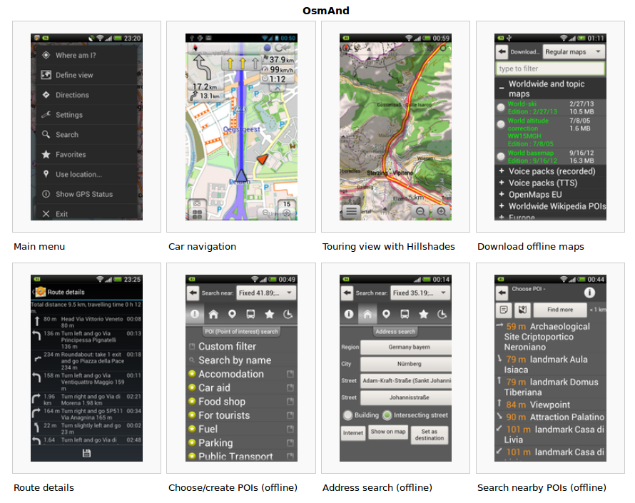

OpenStreetMap
Geoinformación por y para todos
Patricio J. Soriano
Sesión Track Taller V Congreso Estatal RITSI
28 de marzo 2014 - Córdoba
Presentación
Patricio Soriano Castro
Lic. Geografía e Historia
Consultor y Formador TIG y Patrimonio
SIGdeletras.com - @sigdeletras
¿Qué hace un tipo como yo en un lugar como este?
Miembro de Geoinquietos Córdoba
MDV de OSGeo desde 2013
Mapeador en OSM
¿A quién le interesan la Información Geográfica?
¿A quién le interesan la Información Geográfica?
Un poco de Historia
 Mapa de época paleolítica (13.660 años). Cueva de Abauntz (Navarra)
Mapa de época paleolítica (13.660 años). Cueva de Abauntz (Navarra)
¿A quién le interesan la Información Geográfica?
Un poco de Historia

Cueva de Abauntz (Navarra). Diario de Navarra
¿A quién le interesan la Información Geográfica?
Gobiernos, administración, instituciones... Plan de Ordenación Territorial de Andalucía. Junta de Andalucía¿A quién le interesan la Información Geográfica?
Empresas y profesionales.

¿A quién le interesan la Información Geográfica?
A personas como ti y a mí.
- Localización
- Rutas
- ...
...y a él también
¿A quién le interesan la Información Geográfica?
Informatización de la IG
- Producciones cartográficas en papel
- CAD, Sistemas de Información Geográfica y geodatabases
- Webmapping: GoogleMaps, IDEs y servicios, mapas embebidos
- Web 2.0: Redes Sociales, geolocalización, geomarketing y SEO Local
Quiero Información Geográfica
¿dónde está?
- Organismos oficiales
- Empresas
- Cartografía colaborativa
Quiero Información Geográfica ¿dónde está?
Organismos oficiales: Cartografía oficial, pública, cada vez más interoperable pero no totalmente abierta, pero avanzando hacia el OpenData ). Ley 37/2007, de 16 de noviembre Portal Infraestructura de Datos espaciales de España. www.ide.esQuiero Información Geográfica ¿dónde está?
Privada: Empresas de topografía, cartografía vuelos, GPS, UAV, LIDAR... Servicios Web (ej. GoogleMaps).

Quiero Información Geográfica ¿dónde está?
Información Geográfica voluntaria, participativa, colaborativa o abierta.Ver neogeografía.
OpenstreetMap, Wikimapia
Taller de fotográfia aérea con gobos y cometas. Basurama. CastellónOpenStreetMap :: Definición
OpenStreetMap (también referido como OSM) es un proyecto colaborativo para crear un mapa libre y actualizable de todo el mundo; por medio de una comunidad de usuarios, es decir personas con un objetivo común, que ceden su tiempo desinteresadamente y sin fines de lucro para tener la posibilidad de ver, copiar, modificar, y usar información geográfica (como esta) de cualquier parte del mundo sin restricciones de ningún tipo. - About OSM
OSM :: Algo de historia
En julio de 2004 el inglés Steve Coast funda OpenStreetMap en respuesta a los altos precios que cobraba la Ordnance Survey, la agencia cartográfica de Gran Bretaña, por su información geográfica.
OSM :: Algo de historia +
- 2004 Steve Coast vs. Ordnance Survey.
- 2006 Fundación sin ánimo de lucro, Yahoo autoriza uso imágenes.
- 2007 Automotive Navigation Data (AND) dona Países Bajos, India y China. TIGER (Censo de EEUU).
- 2008 CloudMade. GeoBase.ca dona Canadá.
- 2009 API 0.6. 200.000 usuarios.
- 2010 SotM en Girona. Bing Maps (Microsoft) permite uso imágenes.
- 2011 + 500.000 usuarios, + 1.000.000.000 nodos
- 2012 Cambio a ODbL, #switch2osm
- 2013 + 1.000.000 usuarios, Tifón Yolanda
- 2014 + 1.500.000 usuarios, ???
OSM :: Algunos datos
EstadísticasOSM :: Algunos datos +
A 25 de marzo de 2014. Fuente
- Usuarios: 1562983
- Putos GPS: 3857367338
- Nodos: 2261817276
- Líenas: 223703780
- Relaciones:2454763
OSM vs GoogleMaps
Condiciones de servicio. Ver
No deberá
- copiar, traducir, modificar o crear obras derivadas
- aplicar ingeniería inversa, descompilar o intentar extraer con cualquier otro método el código fuente
- redistribuir, sublicenciar, alquilar, publicar, vender, asignar, arrendar, comercializar, transferir ni poner los Productos o el Contenido a disposición de terceros de ninguna
- usar los Productos para crear una base de datos de lugares u otra información de entradas locales
- prohibido modificar¿Google MapMaker?
- ...
Open Database License
Licencia de OSM desde septiembre 2012, antes CC-BY-SA
ES:Legal FAQLas comparaciones no son odiosas
Las comparaciones no son odiosas
Campus de RabanalesLas comparaciones no son odiosas

Las comparaciones no son odiosas
Medina de Puerta de Brandeburgo, BerlinLas comparaciones no son odiosas

¿Quién usa OSM? :: Empresas
Foursquare, iPhoto, Wikipedia, Pinterest...WhiteHouse.gov
¿Quién usa OSM? :: Investigación
- DeustoTech. Universidad de Deusto: uso de OSM a ingeniería, gestión las infraestructuras eléctricas, cat2OSM
- Oberta de Catalunya (UOC): calidad cartográfica
- inLabFIB. Politécnica de Catalunya: optimización de logística terrestre, sostenibilidad urbana, seguimiento
- Más en OSM Research
¿Quién usa OSM? :: Apps
Aplicaciones de consultas, navegación, routing, trackinging, monitorización, edición o accesibilidad. Android - iPhone. Ejemplos: OsmAnd o Skobbler
Entre las principales librerías de código abierto se encuentras: OpenLayers, LeafLet, OSMDroid (mapas de tiles) o MapsForge (mapas vectoriales).

¿Quién usa OSM? :: HOT
Humanitarian OpenStreetMap Team
- Se organiza a partir del terremoto de Haití
- Se realizan trabajos de formación en zonas necesitadas
- La mayor parte del trabajo es remoto
- Actualmente trabajando en Haití, Indonesia, Somalia, Costa de Marfil...
¿Quién usa OSM? :: HOT
1,679 voluntary contributors of the OpenStreetMap project for Typhoon Haiyan (2013) who made more than 4,799,290 Map changes!

Componentes OSM
BBDD, API, front end, tiles y renderizado, editores

Componentes Humanos
- Mapeadores
- Editores del Wiki de OSM
- Lista de Discusión Talk-es
- State Of The Map
- Comunidades locales como Geonquietos
- Mapping Paties. Sierra de Cazorla 2014
Taller :: ¿Qué podemos hacer con OSM?
- Usar (p1)
- Mejorar (p2)
- Trabajar(p3)
p2: Consulta y obtención de mapas
La práctica consiste en obtener un mapa en imagen del Campus de Rabanales Córdoba partiendo que somos la organización del congreso del RITSI y que queremos:
- Crear un mapa de localización del Aulario.
- Incluir un mapa dinámico en nuestra web.
- Enviar enlace al mapa en un correo.
- Crear un mapa guía en PDF del Campus con la localización de los principales edificios y personalizarlo.
p2: Localización del Aulario del Campus
- Abrir OSM
- Buscar "Campus de Rabanales, Córdoba" usando Nominatim. Ver datos y metadatos asociados.
- Capas base: estándar, ciclita...
- Otros estilo en CloudMade o incluso podemos diseñar el nuestro con Mapbox o Tilemill+CartoCSS (Desarrollo)
- Leyenda
pd2: Obtener mapa dinámico: enlace y código para web.
- Botón Compartir
- Obtener enlace y/o código HTML
- Incluir marcador
- Alternativa: UMAP
p2: Generar un mapa estático
- Botón Compartir
- Establecer dimensiones
- Formatos PNG,JPEG,PDF o SVG (edición)
- Escala
- Descargar
p2: Crear un atlas o mapas guías
- OSM on Paper
- Field Papers
- MapOSMatic
- Editarlo y personalizarlo Ver PDF